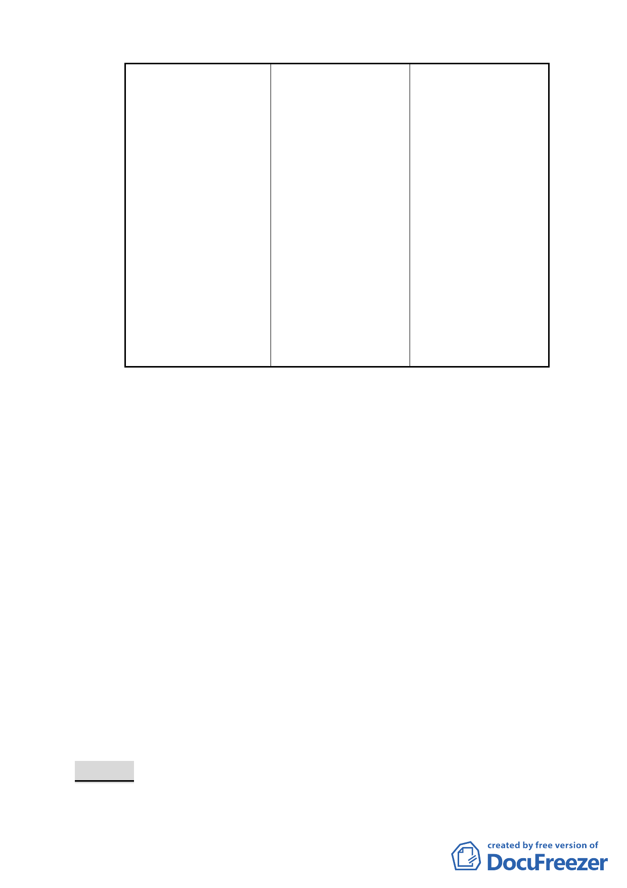

5105.55 平方公尺。 114、115、116、117
共 5 筆地號土地為
更新地區。
2. 其 餘 土 地 業 經 市
府 89 年 6 月 26 日
公告劃定更新地
區。
3. 整 個 計 畫 區 劃 定
為一個更新單元，
並指定整體開發。
4. 都 市 更 新 時 程 獎
勵分別依個別公告
日認定。
六、公民或團體陳情意見：共 6 件。
（一）贊同本地區辦理更新，並配合開闢周圍計畫道路。
（二）地下層開挖率規定：
1.依現行規定辦理，針對地下層開挖勿法外設限，取消限
制地下層開挖率（55％）及沿街退縮 1.5 公尺始得開挖
之規定。
2.建議放寬地下層開挖限縮與退縮規定，增設地下停車
位。
（三）希望保留現有寺廟。
（四）國有財產局建議計畫書應明確說明所屬永昌段四小段 113、
114、115、116、117 共 5 筆地號土地是否劃定為更新地區。
（五）和平西路二段 70 巷 6 弄 13 號、和平西路二段 70 巷 6 弄
15 號及和平西路二段 70 巷 6 弄臨 21 號等建物之建物所有
權人陳情剔除於本計畫範圍，以利參與本計畫區西側刻正
申請劃定之更新單元。
決議：
一、本案除以下各點外，其餘依市府本次所送提會審議資料修正
- 21 -